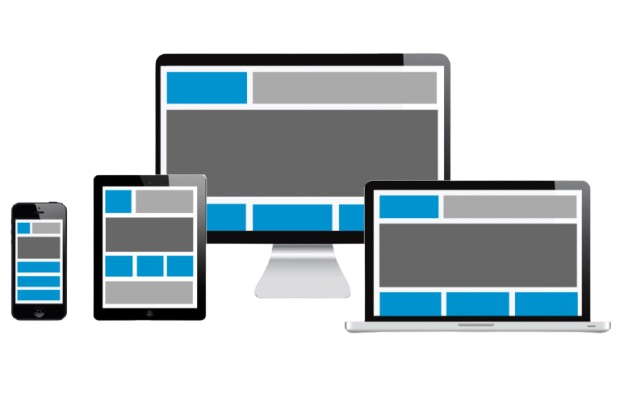

Responsividade

Desenvolvemos interfaces que se adaptam a qualquer dispositivo, garantindo a melhor experiência
do usuário em desktops, tablets e smartphones.
Nossos sistemas utilizam técnicas modernas de design responsivo, grids flexíveis,
imagens otimizadas e testes em múltiplas resoluções.
Design Flexível
- Grids fluidos e adaptáveis
- Unidades relativas (%, em, rem)
- Flexbox e CSS Grid
- Layouts que se ajustam a qualquer tela
Imagens Responsivas
- Redimensionamento automático
- Formatos modernos WebP
- Lazy loading para performance
Testes e Compatibilidade
- Compatível com todos os navegadores modernos
- Testes em diferentes resoluções
- Melhor experiência para dispositivos móveis